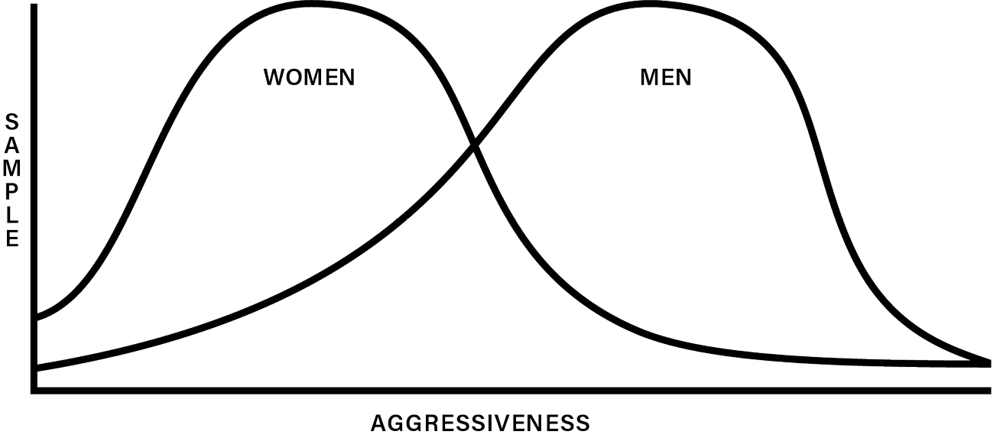

16 Men’s and Women’s Differences ▷ Individual Characteristics
Every known society acknowledges differences between men and women in its traditions and social structure. Many of these differences, such as muscular strength, vocal pitch, sexual function, and anatomy, are plainly visible to all peoples. However, most societies also place much weight on other types of differences between men and women—differences in personality, social relating, and aptitude. If differences such as these exist between men and women, as most societies assume, then the belief that men’s and women’s roles should not be structured in an identical fashion receives important support. For this reason, debate over the existence, extent, and significance of the differences between men and women has been a prominent feature of the current controversy concerning men’s and women’s roles.
This chapter and the one following will consider the data provided by modern science about the differences between men and women. This chapter will focus on individual characteristics—those studies which view men and women as individuals and which search for the differences between them. The next chapter will examine social structural characteristics—those studies of the patterns which emerge in social groupings. This chapter will rely primarily on the findings of modern psychology and the second chapter will rely primarily on anthropology, though each chapter will at times draw data from both disciplines.
These chapters have two concerns. The first is to determine whether weighty scientific evidence points to the existence of significant cross-cultural differences between men and women, and whether these differences correspond in any way to the pattern of men’s and women’s roles outlined in the scripture. The second concern is to determine whether weighty scientific evidence indicates that the major differences between men and women might originate from sources other than socialization and cultural conditioning. Another way of phrasing this question is this: Does scientific data support the contention in this book that the purpose of God for men and women, as revealed in scripture, may have been “created into” the human race?
This second concern must be understood properly, because the way scientific questions are phrased is crucial in forming the answers received. Modern social science constantly confronts a basic issue: To what degree is human behavior determined by biological factors, and to what degree by environmental factors such as socialization and cultural conditioning?* Some writers who study the differences between men and women organize their inquiry around the question: Do biological differences between men and women compel a certain approach to social roles? The answer, of course, is “no.” Biological differences do not compel any approach to the roles of men and women. The only constraint imposed by biology is the necessity of distinctly different roles for men and women in sexual intercourse, an act that must be performed to produce children and thus preserve the species. However, this form of the question—do biological differences compel social differences—eliminates the need to investigate the differences between men and women. The question can be answered easily because little of human behavior is actually compelled by biological factors. Human beings can ignore or overcome many apparent determinants of their behavior. A human being is not even compelled to eat—unless, of course, he chooses to survive.
There is a much more helpful way of phrasing the question: Does scientific data point to any biologically influenced characteristics in the human species that fit a pattern of role differences between men and women? Behind this way of phrasing the question is a presupposition. If some differences between men and women appear to exist apart from the influence of socialization and cultural conditioning, and if these differences appear consistent with a pattern of role differences, then human beings would be wise to pattern human society so that these differences are used constructively rather than repressed and stifled. Of course, men and women could decide to pattern human societies in a way that took little account of the human biological makeup. But we could also decide to take the characteristics of the race into account and build with them rather than against them. To use an analogy, the nature of a building material (steel, concrete, wood, or brick) will influence the way a competent architect designs a building—without determining everything about the building’s design. In the same way, the characteristics of the human species should influence the shaping of its social patterns. If human beings adopt this principle of “working with the grain,” then the differences between men and women point toward a way of structuring men’s and women’s roles. Therefore, the underlying question about biological factors should be framed in a particular way: Is there significant evidence for differences between men and women that do not stem primarily from socialization and cultural conditioning? Might these differences also have some practical consequences for patterning human social roles?
To be sure, the characteristics of the human species are only one of several factors which will influence every intelligent approach to structuring society. Human beings should also take into account the economic, political, and social conditions of the contemporary world. They must understand their current circumstances before formulating an adequate design for the future. Men and women should also pattern their social life according to some vision of the ideal human society. Such visions are usually based on a particular set of ethical principles. These last two factors—social conditions and ethical vision—will be considered in later chapters of this book. Here they are mentioned as part of the context for examining the psychological and anthropological evidence. The characteristics of the human material are important for society. They do not compel human beings to form a society in a particular way, but they are factors which humans must recognize and take into account.
Solid evidence shows that men and women do differ in social relating, aptitude, and personality. Much of the evidence also indicates that these differences are not simply a matter of socialization or cultural conditioning. First, modern psychology has established the existence of many differences between men and women and it promises to establish more in the future. Moreover, these are differences of the type one would expect if men and women were adapted for some differences in functions. Secondly, modern anthropology points to a cultural universal in the area of men’s and women’s role differences. Within the bewildering variety of forms of cultural expression in human history, anthropologists can discern some important, fundamental similarities of pattern. In short, the psychological and anthropological data force us to realize that human beings have remained the same over the last two thousand years in some fundamental ways. Modern circumstances may differ substantially from the circumstances in Paul’s time, but the human material is the same.
Two chapters in a book like this can only briefly review the main features of the evidence for the differences between men and women. The data will be drawn mainly from the fields of psychology and anthropology. Some supportive ethological data will also be reviewed. Data that is more sociological in nature will be presented in later chapters. Taken together, the material in these two chapters help in understanding the differences between men and women, as well as the factors that must be confronted in forming a healthy human society.
Understanding Men’s and Women’s Differences
Most people have a common-sense notion of differences in personality, social relating, and aptitude between men and women. In recent years many people have come to believe that most of these differences are caused directly by socialization or cultural conditioning. Nonetheless, most people feel that men and women differ, and they act on this knowledge in their personal relationships. Ideas like the following are part of most people’s common-sense view of men and women:
- Women are more affectionate, “warm,” and personal.
- Women are more emotional.
- Women are more interested in children.
- Men get along together better than women do.
- Men find it harder to control their sex drive.
- Men are “tougher.”
These statements are rooted in the simple perception of some important differences between men and women. However, such unqualified statements are also imprecise, and at times contribute to the formation of damaging stereotypes—the “Humphrey Bogart man,” the “Victorian woman”1—or are used as a way to disparage others. Thus considering these common-sense notions uncovers an important issue which must be dealt with before proceeding to the actual scientific data. The issue is how to accurately conceptualize and describe the differences between men and women.
One can think about the differences between men and women with a minimum of distortion if the following principles are observed:
-
The differences between men and women should be stated descriptively rather than evaluatively. Too often, such statements are made to evaluate. For example, a group of men will talk about women’s emotions or their lack of self-control in speech; a group of women will discuss men’s irresponsibility or lack of sensitivity in sexual relations. Many statements that appear descriptive are actually evaluative. The statement “women are more emotional than men” looks as if it were descriptive, but normally it is spoken as an evaluative statement. The speaker, a man, usually means that women are more prone than men to lose control of their behavior and judgment under the influence of their emotions. The speaker usually deplores this tendency. Evaluative statements such as these do little to help one understand the differences between the sexes. It is far better to simply describe these differences.
Moreover, any comparison of a male trait with a female trait which judges that one is intrinsically better than another is distorted because it presumes an identity of role or function. For example, to deplore women’s “emotionalism” presumes that men and women are both “supposed to” express their emotions in an identical fashion. However, such a judgment is not possible if men and women are supposed to express their emotions differently, or if emotions are supposed to be expressed differently in different situations.
-
The differences between men and women are not absolutes. This principle applies especially to individual personality traits such as aggressiveness, emotional expressiveness, or nurturance. For example, as will be discussed in detail later, evidence indicates that men are more aggressive than women. However, this is a generalization. The actual results of testing a representative sample of men and women for aggressiveness looks something like an overlapping double bell-shaped curve on a graph (see the illustration below). The overall distribution of the curves shows men higher on aggression. Some women would be more aggressive than most of the men, but men appear in greater proportions at increasingly higher levels of aggression.

A statement like “men are more aggressive than women” is a generalization.2 The bell-shaped curve is the curve of probability. The larger the sample of men and women being tested, the more accurate the results will be. The smaller the sample, the more unreliable the results. In other words, conclusions from psychological tests for trait differences are not absolutes. They are statements of probability.
This fact is important in any description of the differences between men and women. On the one hand, statements about trait differences tend to become unreliable in small samples—say, a comparison between one man and one woman. The fact that men tend to be more aggressive than women is less likely to be verified with a small sample than with a large one. On the other hand, the fact that some women are more aggressive than most men would not mean that no such trait difference exists. It does exist. It can be a useful generalization—if employed fairly and expressed properly. In short, statements about men and women in terms of trait differences must be made carefully, but these differences do exist and they are an essential aspect of the psychological makeup of the sexes.
- Both sexes possess every trait. Men and women can be compared on the same tests because they have the same traits. Both men and women are aggressive and both men and women are nurturant. Except for biologically reproductive tasks like childbearing and nursing, there are no activities that both men and women cannot engage in. Both can fight and both can nurse the sick. The differences between men and women lie in the relative strengths of various traits and the personality structures underlying the individual traits.
- Many trait comparisons are not universal but hold only within the same social group or within the context of male-female relationships. For example, men are taller than women, but an unwise cross-cultural comparison could show the opposite: Tutsi women are taller than Pygmy men; thus, women are taller than men. The point is that most trait differences between men and women hold for members of a particular social group. It is also true that many trait differences tend to appear only within the context of male-female relationships. Men tend to be protective, but they will often act in a protective manner only when their own women and children are present. In other words, the presence of the opposite sex—and often only certain members of the opposite sex—will release or inhibit certain qualities.
- The most significant differences between men and women are in psychological structure and social behavior rather than in intelligence, skill, and ability.3 Men and women will differ in their responses to the same social situation. For example, men and women will differ in the way they act in the same group. Also, a man will behave differently in a group of men than a woman will behave in a group of women. These differences are more important than differences between men and women in ability and competence.
- The differences between men and women should sometimes be controlled, not maximized. The purpose in trying to understand the differences between men and women is not to say that men and women ought always to behave on the basis of those differences. For example, men may tend to be more aggressive than women, but this does not imply that men should be as aggressive as possible and that women should be passive. Perhaps men should moderate and channel that aggressiveness rather than maximize it. It could then be utilized more effectively as a source of strength.
- The differences between men and women do not determine men’s and women’s roles. Differences are but one factor that must be taken into account. Other factors include one’s ideal vision of human society, and the economic, political, and social conditions of the modern world. The differences between men and women are important factors, but they influence rather than determine men’s and women’s roles.
Experimental Psychology
Experimental psychology, the other major approach to psychological investigation, likewise contributes to the study of the differences between men and women. As discussed earlier, experimental methods can yield findings which are decisively substantiated, and can also more surely identify the origins of behavior. This section will summarize the differences between men and women substantiated in the experimental literature. It will then discuss those efforts in experimental psychology to sort out the various biological and sociological sources of the differences between men and women. This section will conclude with some general reflections on the experimental data and the current limitations of experimental methods.34
Though there is some disagreement over specific issues, the experimental data generally indicates the existence of several significant physical, emotional, social, and intellectual differences between men and women. Of course, the word “significant” is a relative term. For example, the differences between men and women would appear relatively insignificant in comparison to the differences between humans and apes. The differences affirmed by contemporary psychologists would also appear less significant than those asserted by Victorian physicians a hundred years ago.35 However, the experimentally documented psychological variations between men and women appear significant indeed when compared to the expected range of variation among members of each sex. The data from experimental psychology supports the view that men and women are not interchangeable units, but are two different types of human being.
The experimental data will be examined in four categories: social, emotional, intellectual, and physical differences between men and women. While this review of the research cannot help but neglect much useful and relevant material, the broad outlines of the experimental data will emerge.
Social Differences
Chapter Seventeen will examine several social characteristics which men and women exhibit in different ways, depending largely on the type of group in which they are relating.36 For example, dependency, conformity, and competitiveness are such characteristics. This section, however, will examine some social characteristics which the experimental literature says that men and women exhibit in a more consistent and uniform fashion. Two of these stand out as particularly significant. The first is aggression, and the second is nurturance.*
Aggression ▷ Researchers have not completely agreed on a definition of aggression. Some prefer a narrow definition, which defines aggression only as behavior which is directed to the harm of another individual.37 Others define aggression more broadly as a quality integrally related to ambition, drive, and competitiveness.38 To understand the data and develop a definition, one should view directly the type of behavior which most of the various experiments measure. These experiments, which are commonly conducted with primates or children, usually measure: (1) physically violent behavior, such as wrestling, kicking, or delivering simulated shocks; (2) verbally violent behavior, such as name-calling; and (3) apparently violent play behavior, known technically as “rough-and-tumble play.”39 Rough-and-tumble play differs from the first two types of behavior in that the participants may be on perfectly good terms and have no desire to cause harm to one another. However, rough-and-tumble play often appears so similar to malicious fighting that researchers usually view it as a manifestation of aggression.
The results of the many studies of aggression in men and women are strikingly consistent. In nearly all the studies, the male of the human species appears more aggressive than the female.40 This conclusion is strongly supported by ethological studies of mammalian behavior, particularly primate behavior, and by the common observation that there are more men than women in armies, physically violent sports, and criminal penitentiaries.41 Cross-cultural experiments on children have demonstrated that boys are more aggressive than girls in both Western and non-Western, developed and developing cultures. The evidence could hardly be stronger that men are more aggressive than women. In fact, there is greater consensus among psychologists about this conclusion than about any other social, emotional, or intellectual difference between men and women. (There is no disagreement about many of the physical differences.)
Men are more aggressive than women according to most psychological tests for this trait, but researchers interpret these results in different ways. As mentioned earlier, psychologists differ in their definitions of aggression. Some define it as simple violent behavior, a desire to cause harm. Others define aggression in terms of frustration. According to this view, male aggressive behavior is motivated by the higher levels of frustration experienced by men. Finally, some researchers define aggression as a broader quality related to ambition, drive, and competitiveness.
These definitions vary according to the psychologist’s judgment about the motives behind male behavior, and the degree to which these motives can then be extended to behavior which is not explicitly violent. The most restrictive definition of aggression—aggression means a desire to cause physical harm to another—would make it difficult to apply the findings about aggression to many other types of human behavior. It may explain why men are more numerous in armies, prisons, and football teams, but it would not clarify the sources of many other observed behavior differences between men and women. However, many psychologists prefer a broader definition of aggression. Some relate aggression to dominance behavior—the desire to triumph over another, to defeat an opponent, and establish oneself in an ascendant position. If so, then aggression also lies behind general competitiveness in political, economic, and social life, and thus men may have a biologically based advantage in competitive achievement.42 Experiments to measure competitiveness in men and women have not yet yielded significant data, but there is some indication that this inference from the studies of aggression is justified.43 Other investigators believe that aggression either motivates or is motivated by frustration. Some studies indicate that men experience more frustration than women.44 Perhaps the studies of both aggression and frustration are studying a related phenomenon. At any rate, it appears to be a phenomenon with a strong biological basis.*
Nurturance ▷ A second social difference between men and women appears in the area of nurturance. This term refers to behavior directed to those younger, weaker, or in a dependent position, with the purpose of offering aid and comfort. Most people think of women as the more nurturant sex, and in fact, in most if not all societies, women have assumed a social role which includes greater involvement in the care of the young, the sick, and the infirm. Though experimental data is not as conclusive as it is with aggression, the evidence at hand supports the assertion that women are more nurturant than men.
Some of the most significant data derives from the study of mammalian behavior. Humans do not always behave as other mammals do, but any behavior pattern which appears to be nearly universal among mammals must be taken seriously as strong evidence. Nurturant behavior appears to be such a nearly universal pattern. In almost all mammalian species, the female takes primary responsibility for the care of offspring.45 The nurturant behavior of mammalian males varies widely from species to species, but they rarely respond as intensely to the needs of offspring as do the females.46 In some species, males will actually respond aggressively to offspring, even to the point of killing and eating a litter. This ethological data concerning male and female nurturance must be supported by studies of humans in order to receive final confirmation, but such a nearly universal mammalian pattern provides initial support for the common human observation that women are more nurturant than men.
While many more studies of human nurturance need to be conducted, the data which exists does suggest that women are indeed more nurturant than men. One hormonal study, to be discussed more fully in a later section, indicates that male hormones likely inhibit nurturance.47 Girls who had been exposed to abnormally large quantities of male hormone while in the fetus stage show less interest in dolls and children and less of a tendency to fantasize expectantly about marriage and family life. Another relevant study looked at “helping behavior” in children of various cultures.48 This type of behavior is similar to nurturance because it includes giving comfort and encouragement to those in need. The study showed that girls between the ages of seven and eleven years were more helpful than boys of the same age. This difference was statistically significant, but the study yielded an even stronger difference when it focused specifically on the offering of emotional support. Girls aged seven to eleven gave more emotional support in all six of the cultures studied. Therefore, though the experimental data is still slim, it points in the direction of a difference between men and women in nurturant behavior.
Emotional Differences
Experiments designed to test the common observation that men and women differ in the way their emotions function have frequently encountered two major obstacles. The first obstacle arises when an experimenter attempts to define and measure emotional states. Experimental psychologists like to measure behavior, but the link between behavior and emotional states is hard to define. For example, one type of behavior such as aggression can potentially be connected with a number of emotions such as fear, hostility, and frustration. Thus a psychologist studying emotions must usually rely on some form of subjective self-report by his subjects. This method is not always possible, as in infant studies, nor is it always reliable. A second obstacle is a problem of conceptualization. As noted earlier, the descriptive literature has contributed to the understanding of emotional differences between men and women by looking at larger psychological patterns instead of individual traits. Experimental psychology studies individual traits almost exclusively. It is not yet at the point of development where it is equipped to adequately cope with the complexities involved in testing hypotheses such as the ones suggested by the descriptive literature. Many experimental psychologists recognize this limitation, but it remains a limitation. Nevertheless, the experimental data does reveal two areas of possible emotional difference between men and women: anxiety and frustration.
Numerous studies utilizing a self-report method have shown women to be more anxious and fearful than men.49 These results have been interpreted in two ways: Either men are actually less fearful and anxious than women, or else they are less willing to expose their fears and anxieties to experimental psychologists. There is a good chance that both interpretations have a substantial basis. The results of such tests are strong and consistent: Women do report higher levels of anxiety and fearfulness. However, other studies show that men do tend to be more reserved on self-test studies of emotions. This qualifies the results of such tests, but does not nullify them. Another factor to consider is the likelihood that men and women respond differently to various fear-inducing situations. One psychologist suggests that women might respond with greater fear to physical danger, the dark, and other such threatening situations, whereas men might respond with greater fear to situations which directly challenge their “manhood,” such as public humiliation, failure, and appearing cowardly.50 In short, though the data is interpreted somewhat differently, some experimental evidence points to a difference between the way men and women experience and exhibit fear and anxiety.
The experimental data also points to a difference in the way men and women experience frustration.51 Males appear to respond more emotionally to frustrating situations. Their behavior when frustrated is often aggressive, sometimes involving a violent attack on an object or a person, though they sometimes respond with a more generalized emotional upheaval. The tests which have yielded this data have primarily studied child behavior; they have found that this difference in frustration reactions may begin as early as eighteen months.
In conclusion, experimental studies have shown that men and women differ in levels of anxiety and frustration. The obstacles to the experimental study of human emotions are considerable, and investigators are divided on the meaning and significance of the data. But the data does present a pattern of emotional differences between men and women.
Intellectual Differences
Two major differences in intellectual abilities between men and women emerge from the experimental literature. The first is verbal ability, and the second is spatial ability. Early studies tended to show that females had a consistent advantage in verbal ability from the age of first speech to adulthood.52 However, recent studies show males and females as generally equivalent in verbal abilities until the age of eleven or twelve, when females begin to surpass males in fluency, vocabulary, grammar, and spelling.53 Females carry this advantage through adolescence and into adulthood. On the other hand, males seem to have an advantage in visual-spatial ability, one which follows a pattern similar to verbal differences. Men and women seem to have no differences in visual-spatial ability until early adolescence, when males begin to demonstrate a superior ability to visualize objects in space and to accurately perceive the relationships between various objects.54 For example, men are generally more successful at perceiving a regular geometric form, such as a circle or a triangle, when it is camouflaged by random lines and curves. Corinne Hutt states that this gives men an advantage in such practical activities as aiming at a target, arranging objects according to a two-dimensional pattern, or having a good sense of direction.55 Julia Sherman also suggests that “superior spatial skill may partly account for their [men’s] known superior performance in aspects of geometry, mathematical problem solving, engineering, architecture, and the mathematical and physical sciences generally.”56
Physical Differences
The experimental literature is most consistent when discussing the physical differences between men and women. Differences in anatomical structure, physiological process, and physical ability are much easier to analyze and study than the behavioral and emotional differences. Many physical differences are visible to even the untrained eye, and all are easily measured utilizing the sophisticated tools of modern medical technology.
Researchers have noted physical differences between men and women in six major areas. These areas and the types of differences observed in each area are as follows:
- Size and strength. From birth on, males have more muscle and less fat than females. In any given population the average male height and weight will exceed the female average. The female metabolism is also lower than the male metabolism.57
- Susceptibility to serious physical disorders. The human male is more susceptible than the female to many diseases and birth defects. Females on the average live longer than males, and there is some evidence that suggests that this is not primarily a result of differential environmental stresses.58
- Rate of maturation. Males and females mature at different rates. Females mature earlier than males (e.g., female bones develop more quickly than male bones), while male growth continues to a later age than female growth. Researchers believe they have not yet discovered all of the differences in the male and female developmental patterns.59
- Hormonal rhythm. The female hormonal system operates on a more cyclical pattern than the male hormonal system. This cycle is also associated with a regular pattern of emotional fluctuation.60
- Brain differences. Though the functional differences are not always clear, several structural differences have been noted between male and female brains. The relation between the two brain hemispheres appears to be different. Male and female brains show some differences in external appearance. Also, differences have been discovered in electroencephalogram recordings of male and female brains.61
- Primary and secondary sex characteristics. These are the most obvious differences between males and females. Males and female differ in primary characteristics such as sex organs, and in secondary characteristics such as body hair and vocal pitch.62
The above list does not exhaust the physical differences between males and females asserted in the experimental literature. As Sherman puts it, “Sex differences exist for almost every physical variable, and they increase with maturation.”63
The relationship between men’s and women’s physical differences and their personality differences is not completely understood. Such a relationship clearly exists in some areas—the menstrual cycle affects emotional fluctuation, and some brain differences may affect levels of aggression. (Hormonal studies of this possibility will be reviewed later.) Other more subtle relationships may exist. For example there may be a connection among size, strength, and body rhythm, and self-concept. Though such relationships remain unclear, the existence of the physical differences themselves is strongly substantiated.
The Causes of the Differences between Men and Women
This review of the social, emotional, intellectual, and physical differences between men and women is helpful in itself. These differences appear to be consistent characteristics of men and women in the modern world, and an understanding of them allows us to talk about men and women with less distortion. However, few researchers or popular writers stop at this point. They usually go on to raise questions about the causes of these differences between men and women. How influential are biological factors in the development of these differences? To what extent do early childrearing practices form the characteristic male and female personality of the growing child? Do other socialization processes have an impact on the development of men’s and women’s differences? These questions will now be examined.
Not all of the experiments which examine the differences between men and women also reveal the causes of these differences. Some experimental designs are simply not suited to produce such data. However, several experimental techniques do yield significant data about the causes of the differences between men and women.64 Six of these techniques, and some of the data which they have yielded, will now be examined.
Infant Behavior ▷ Many researchers study infant behavior to get beyond patterns of socialization because newly born infants are least influenced by a social environment.65 If male and female infants behave differently, the differences can be attributed almost exclusively to biological factors. However, this method has one important disadvantage: The infant’s range of behavior is very limited. In fact, that behavior in which researchers are most interested—aggression, nurturance, verbal ability, and so on—cannot be observed in infants. The categories of behavior which psychological researchers normally investigate do not appear until a child begins to develop a distinctive personality. By this time, socialization and cultural conditioning are already well advanced. Nevertheless, a few behavioral differences between male and female infants have been found. Girls appear to have greater tactile sensitivity, and they display more types of oral behavior, such as reaching for the mouth with a hand, and reflex smiling. Boys probably have greater muscular strength than girls from birth, and they appear to startle more easily. More differences may be uncovered in the future as infant studies progress to a more advanced stage. However, at this point, no significant conclusion directly relevant to the concern of this book can be drawn from infant study data.
However, studies of older children (ages three to seven years) have produced more significant results. Differences in aggression appear early, as do certain types of differences in activity rates. Girls may surpass boys in early verbal behavior, though the data is inconsistent on this point. Other social structural differences appear which will be discussed in the following chapter. However, one cannot safely attribute these differences among older children solely to biological factors. Children of ages three to seven years have already received much formation from their social environment. Nevertheless, data obtained from these studies can reveal something about the influence of biological factors, especially when the data is consistent and cross-culturally based, as in the studies of aggression.
Cross-Cultural Studies
Some investigators have looked to cross-cultural studies for help in distinguishing between biological and environmental influences. If one trait or temperamental pattern appears in several diverse cultures, then the characteristic may be highly influenced by biological factors. On the other hand, a high degree of diversity in such traits from culture to culture may indicate a high level of environmental influence.* Cross-cultural studies have proven to be quite helpful in clarifying the causes of a few differences between men and women. In one study of aggression in seven cultures, young boys in all the cultures displayed more aggressive behavior than young girls.66 Boys engaged in more rough-and-tumble play, exchanged more verbal insults, and retaliated against aggression more readily than did girls. Another study of visual-spatial ability suggests that ability levels vary somewhat for men and women in different cultures depending on the level of autonomy a culture allows for children and women.67 However, this suggestion of some cross-cultural variation must be reconciled with other studies which show some genetic factors at work in visual-spatial ability. Probably both influences are at work. Finally, cross-cultural studies show that women exhibit certain kinds of nurturant behaviors at a higher level than men.68
This conclusion is supported by the cross-cultural anthropological work of Margaret Mead. In Male and Female, first published in 1949, Mead draws some conclusions about men and women based on her field experience among seven Pacific cultures and on other anthropological and psychological research concerned with men’s and women’s differences. She concludes that men and women differ in several areas of temperament, including aggression and nurturance, and that these differences are rooted in biological realities. In particular, she strongly states her conviction that females are biologically predisposed to desire to bear and raise children, while males are predisposed to a restless ambition and a desire for achievement. She acknowledges that these predispositions can be redirected by a society, but she nevertheless sees them as extremely significant.69
Animal Studies ▷ The study of animals, especially primates, has yielded important data which can be applied to efforts to understand the causes of differences between men and women. A key issue in understanding these origins is distinguishing between learned and biologically based behavior. It is obvious that much human behavior is learned. One of the features which most strongly differentiates homo sapiens from other animal species is the human capacity for learning and strong reliance on learned social behavior. Other animal species rely on learned behavior as well, but biological factors are more dominant. Thus, when one observes strong similarities between human and animal behavior (especially primate behavior) then there is some likelihood that a biological factor is at work in the human behavior.* Scientists hotly debate the question of how directly we can compare animal behavior to analogous human behavior. However, most investigators, recognizing that humans are animals, agree that some valid comparisons can be made.
Some animal studies which show higher levels of aggression in males and higher levels of nurturant behavior in females in all mammalian species have already been mentioned. In addition, animal studies have clarified some of the biological roots of aggression and nurturance. Adult exposure to male or female hormones influences the mature display of aggressive or nurturant behaviors, but these behaviors are also influenced significantly by the prenatal exposure of the brain to these hormones. Animal studies show that the animal brain is typed “male” or “female” just preceding or subsequent to birth. These hormonal studies have been conducted and confirmed in many different species, including primates.70 Furthermore, animal studies have also clarified an important mechanism of learning which combines biology and socialization. In this type of learning, called “imprinting,” the members of a species are genetically programmed to learn certain behaviors at critical periods in their early development. The concept of imprinting has already been effectively applied to the development of language skills and gender identity in humans.71
Other differences between males and females have surfaced in animal experiments. Male and female monkeys react differently to stress situations in early life: Male infants respond to maternal separation with more abnormal behavior. Monkeys also react differently to novel external stimuli: Males approach, females withdraw.72 These differences among animals do not necessarily indicate parallel differences among humans. However, when a similar pattern is found among humans (as it often is), the animal studies suggest that it is at least partially rooted in some biological factors.
Longitudinal Studies ▷ Longitudinal studies—that is, studies of a sample population over time—can often isolate causes of behavior more precisely than other types of experimental studies. A longitudinal study usually examines a small sample of individuals intensively over a period of years. Since the researcher works with the same group, he can often observe various behavior patterns more clearly and isolate specific causes more easily.
Two longitudinal studies are especially significant for our purposes.73 Both have been conducted by John Money and his associates. The first set of studies confirmed in humans the conclusion from animal studies that male hormones have a substantial effect on the fetal central nervous system. Money’s subjects were females suffering from the Adrenogenital Syndrome, a genetic defect which causes an excessive production of male hormones in a female fetus. Money’s study of these girls during their middle childhood produced some extremely significant data: An unusually large number of the girls were “tomboys,” expending a high level of physical energy on vigorous outdoor play, dressing in a “utilitarian and functional” manner, and preferring cars, trucks, and guns to dolls. In later life they subordinated marriage to career in thinking of the future, and entered romantic attachment with boys at a later age than a control group. The results of this study strongly support the hypothesis that prenatal exposure of humans to hormones organizes the central nervous system along distinct “male” and “female” lines in a manner similar to that demonstrated in earlier animal experiments. It also appears that this prenatal sexual typing affects not only directly reproductive behavior but also behavior which is usually identified with the traditional male and female role.74
A second set of studies conducted by Money demonstrate the significance of environmental factors on how a child learns to identify himself as a male or a female. One of these studies was performed on a pair of identical twins, both genetically masculine. One of the twins was accidentally castrated at the time of circumcision, and was subsequently reared as a girl. This child adapted successfully to the female role, and acted differently than the other twin who was raised as a male. At the same time, the twin with the female gender identity showed a high degree of “tomboyish” behavior tendencies, much like the young girls cited in the earlier study. Because of the unique and unfortunate circumstances surrounding this longitudinal study, it is not easily replicated and confirmed. However, Money has conducted other longitudinal studies which also suggest the importance of the sex of rearing in the formation of a person’s gender identity.75
Physiological Studies ▷ Some researchers have shown correlations between human physiological processes and emotional, behavioral, and intellectual differences between men and women. Money’s examination of the enduring effects of fetal exposure to male hormones is an example of this type of physiological/behavioral study. Another helpful set of physiological studies have focused on the menstrual cycle.76 Studies conducted over the past thirty years confirm the popular belief that most women experience a cyclic emotional fluctuation corresponding to the various phases of the menstrual cycle. Endocrinologists hypothesize that this fluctuation results from the varying levels of estrogen and progesterone, the two primary female hormones, present in the female system at different phases of the female cycle. Low levels of estrogen and progesterone correlate with higher levels of anxiety, irritability, and depression; high levels of these hormones correlate with greater sense of well-being and self-esteem. The degree of these emotional fluctuations vary from woman to woman according to the emotional stability of the individual woman and the environmental pressures she experiences. Other studies have examined the other stages in a woman’s life when estrogen and progesterone production decrease—immediately after childbirth and during menopause.77 Again, many women are more anxious, irritable, and depressed during these times. Physicians sometimes treat women suffering from severe menopausal depression with estrogen, and the treatment is usually successful. In short, studies of the hormonal variations within the female menstrual cycle reveal some important ways the female emotional makeup differs from the male makeup.
Some of the most interesting recent physiological/behavioral studies of men’s and women’s differences have concentrated on the consequences of brain lateralization.78 The cerebrum, center of a human’s higher intellectual processes, consists of two hemispheres. Recent studies of subjects who have had these hemispheres surgically disconnected to control severe epilepsy have revealed that each hemisphere specializes in different functions. Most verbal functions are centered in the left hemisphere, while most emotions and visual-spatial functions are centered in the right hemisphere. Therefore, future experiments may show a physiological base to the female superiority in verbal functions and the male superiority in visual-spatial functions, as well as to differences in emotional behavior. Further experiments have also disclosed a possible difference in the way brain hemispheres interact in male subjects and female subjects. Though research in the area of brain lateralization is only beginning, it promises to illuminate some of the biological processes underlying the differences between men and women.*
Psychoanalytic Theory and Technique ▷ In some ways psychoanalysis is not an experimental technique like the others we have been discussing. Instead, it is more of an all-embracing theory of the origins of the differences between men and women. However, psychoanalysis should be examined because some research into the causes of sex differences has borrowed concepts from psychoanalytic theory. Erik Erikson has used the conceptual framework of psychoanalysis to study the different approaches to inner and outer space among male and female children.79 Judith Bardwick and other experimental psychologists have also made use of some psychoanalytic approaches.80
The root of the psychoanalytic approach is the view that the differences between men and women develop mainly through a child’s evolving perception of anatomy and social roles. According to Freud, the visibility of the male sexual organ produces in young girls “penis envy,” a sense of lack and a desire to have a penis. In the normal psycho-sexual developmental sequence, “penis envy” becomes a desire for children. The male child suffers a different but corresponding trauma: He covets his penis, and fears that it will be forcibly taken from him by his father. Freud terms this fear “castration anxiety.” The boy conquers this fear by identifying with his father and the adult male role. These concepts of “penis envy” and “castration anxiety” have been modified, reformulated, and supplemented by contemporary psychoanalysts. One common reformulation is known as the “womb envy” theory.81 This theory views male aggression and achievement orientation as a compensation for an inability to bear children. Psychoanalytic explanations for the differences between men and women differ substantially, but the basic psychoanalytic perspective remains the same: These differences develop in large part through a child’s perception of sexual anatomy and adult social roles.
The psychoanalytic explanations of the origins of sex differences are quite controversial and much-disputed. However, if psychoanalytic explanations have any validity, they at least offer another perspective on the origins of men’s and women’s differences. In essence, psychoanalytic theory argues that some of the differences between men and women may not result merely from the direct influence of biological or sociological realities, but also from the individual’s psychological perception of biological and sociological realities.* Psychoanalytic theory views both the family role and structure and the child’s sexual anatomy as crucial influences on sexual identity and role. Though the biological factors are not necessarily direct determinants, they are seen as always exerting a powerful influence through the child’s anatomy. It is not clear how fruitful the psychoanalytic approach will be to the future research into the origins of men’s and women’s differences.
To conclude, experimental methods of research have clearly uncovered many factors underlying the differences between men and women. Many of these factors are biological ones, as distinguished from factors which flow from processes of socialization or cultural conditioning. The six methods surveyed here promise to yield important data in the future.82 As investigators refine these techniques and learn how to combine them (e.g., performing a cross-cultural study longitudinally), they should be able to cast more light on the origins of the differences between men and women.
This survey of the experimental data provides a helpful perspective on the results that will come from future research. Those who wish to minimize the differences between men and women often state the results by saying that science (meaning usually experimental psychology) has only established the existence of a limited number of biologically based differences. This statement is true, although it is also true that the differences that have been established are of considerable importance for the human personality. However, the immature state of current research allows us to predict with considerable confidence that more differences will be established and more biological bases will be discovered in the future. Of course, the influence of socialization and cultural conditioning on the differences between men and women will also be highlighted. Nonetheless, we can expect that the direction of research will yield more experimentally confirmed differences between men and women and will establish more the biological origins for them.
Limitations of the Experimental Research
Like the descriptive literature discussed earlier, experimental psychology has advantages and limitations when applied to the study of the differences between men and women. The chief strong points of the experimental studies are their sensitivity to causal factors and their use of measurements and test designs which yield clear quantitative data. However, the experimental research also contains some weaknesses and limitations. Some of these limitations are important to note.
In general, experimental research into the differences between men and women is at an early stage of development.83 Experimental psychology as a whole is probably the least developed of the sciences, and within experimental psychology the study of men’s and women’s differences has received comparatively little attention. Indeed, much of the available data on men’s and women’s differences has been drawn from studies primarily concerned with other questions. Also, many experimental studies investigating possible differences between men and women have yielded both conflicting and inconclusive results. Such conflicts may mean that the hypothesized differences do not exist, or they may reflect serious conceptual and methodological problems blocking the discovery of significant data. The experimental research must be assessed with these limitations in mind.
Within this experimental research, the physiological studies currently provide the most reliable and useful data. Problems of measurement are reduced, as are problems involved in detecting underlying causes. Other experimental studies, especially those aimed at measuring social behavior and emotional states, suffer from weaknesses, most of which revolve around the problem of conceptualization. How does one define such elusive and subjective terms as passivity, dependence, emotionality, and empathy? In addition, the investigator must solve serious difficulties in operationalizing such terms—that is, he must define a qualitative category in quantitative terms. For example, an investigator who wants to study nurturance behavior in men must define “nurturance” in such a way that it refers to observable and measurable behavior. What is nurturant behavior in men? Obviously there is much male behavior which the investigator could define as nurturant. The results of the experiment will depend on his choice of behavior and his choice of method of operationalizing his definition. Furthermore, emotional dispositions and underlying motivations are difficult to connect to standard behaviors. Eleanor Maccoby and Carol Jacklin make the point in this way:
Suppose it should prove true that children of one sex are more likely than those of the other to cry when the mother or father leaves them alone. Are these children more “attached” to the parent or more frightened of being alone? Or do they show more intense attachment behavior because they become frightened more easily? We have encountered frequent instances in which sex differences at an overt level of behavior are attributed to dispositions that are thought to underlie them.84
In other words, an experimental study may succeed at accurately measuring external behavior but then fail to connect it to the appropriate emotions and motives.
Another example of experimental problems of conceptualization arises in connection with “trait-patterns.” One of the most helpful insights contributed by the descriptive literature is the observation that the individual traits of men and women differ partly because of the differing pattern or organization of individual traits within men and women. Experimental methods are usually highly analytical, carefully separating one variable from another. This method decreases the chances that broad overall patterns will be observed.*
To summarize, the experimental literature offers much data to illuminate the differences between men and women. However, the experimental findings must be approached with caution, for they are often sketchy and sometimes contradictory. This caution should also make one more open to other sources of data, especially the descriptive literature.
Final Comments
This review of the current states of descriptive and experimental studies of the individual differences between men and women leads to several broad conclusions. The data shows that men and women differ emotionally, intellectually, and in their typical approaches to social relationships. Several of these differences are at least partially rooted in biological factors. Men and women also differ in the pattern or structure of their psychological makeup. The social scientific data indicates clearly and decisively that men and women are not identical and interchangeable units.
It is now possible to ask once again if the evidence from the social sciences about the individual differences between men and women fits with the scriptural role structure discussed in previous chapters. Before this question can be answered, another body of evidence from the social sciences must be examined. These are studies of the patterns of men’s and women’s roles in various cultures, and the relationship between these social patterns and the individual psychological differences among men and women. After examining this literature, it will be more possible to assess how the social sciences can contribute to an understanding of a sound approach to men’s and women’s roles in the modern world. It will also be more possible to determine the relationship between the evidence from the social sciences and the teachings of the scripture.
Finally, this review of the individual differences between men and women provides a perspective on the value of the common views of these differences mentioned earlier. Does this “conventional wisdom” receive support from the social sciences? Are women “warmer” and more emotional than men? Are men “tougher” than women, and less sexually self-controlled? And so forth. The common-sense view seems generally based on truth, but none of the popular ways of describing men’s and women’s differences finds uncritical and unqualified endorsement from the social sciences. The common-sense view notes actual observed differences in the ways men and women behave, but its conceptual framework is too simplified. For example, women’s emotions function differently than men’s emotions, but it is not accurate to say that women are more emotional than men. Significant differences between men and women do exist. However, they must be carefully defined and described if they are to pass the test of scientific scrutiny.
380*Many different terms are used in discussing this controversial issue. The issue is phrased as a question of conflicting influence: nature versus nurture, genetic versus environmental, innate versus acquired, instinctive versus learned, biological versus psychological, see J. Money and A. Ehrhardt, Man and Woman, Boy and Girl (Baltimore: Johns Hopkins Press, 1972), 1. Each of these terms has a specific and distinctive meaning among social scientists, but they are popularly used as more general categories. This chapter and the one following will use the terms “socialization” and “cultural conditioning” to describe the processes operating generally on the nurture/environmental/acquired/learned/psychological side of the influence balance sheet and the term “biological” to describe the opposite side.
388*Of these writers, Erikson, Castillejo, Stern, and Deutsch are psychoanalysts; Stein, Buytendijk, and Hildebrand are phenomenologists; Ortner and Mead are anthropologists; and Bardwick is an experimental psychologist who regularly draws on personal observations. Psychoanalysis, phenomenology, and anthropology are all approaches that rely heavily on descriptive insight. The psychoanalytic material must be read with caution, for sometimes descriptive accounts are interwoven with attempts at explaining the behavior by reference to unconscious processes (unobserved constructs) and early childhood experience (correlations not based on descriptive observation). Nonetheless, much of the psychoanalytic literature contains descriptive observations. The phenomenological material is perhaps even more useful. Phenomenology is less well known in the United States and Britain than is psychoanalysis, but it is a significant intellectual movement on the European continent. Phenomenology is primarily a philosophical method, but it has direct application to psychology and the social sciences and has heavily influenced continental social science. For a helpful introduction to phenomenology and its application to psychology and sociology, see Roche.
389*In the quotations that follow the integration/differentiation trait-pattern in its entirety is not always in the minds of the various authors. This chapter uses a conceptual framework to order observations of different social scientists that are pointing toward the same realities.
397*See Bardwick, 54–58, for a study of female motives for entering sexual relationships. As with all the elements of the trait-patterns described in this chapter, no clear causal explanation is being offered here for the different sexual orientations of men and women. The point here is not that these different sexual orientations are formed primarily by either biological influences or by cultural and social influences. Instead, the point is that there probably exists some connection between this difference in sexual orientation and certain other differences between men and women, i.e., those differences included in the integration/differentiation trait-pattern.
398*The goal orientation/personal need orientation pattern could be stated in another way that might be conceptually helpful: In social situations men are more oriented to goals outside the situation (what the situation can become), women to internal goals (relieving needs, giving comfort and pleasure).
401*Hildebrand illustrates the connection between these two patterns:
It would lead too far here to enumerate all the details of the spiritual particularities of the feminine and masculine person. The specific, organic meld of heart and mind, of the affective and intellective centers in woman, the unity of her entire nature . . . the precedence of Being as a personality over objective accomplishments—versus man’s specific ability to emancipate the mind from all his vitality . . . his specific suitability for efficacy and the accomplishment of objective works . . .33
402*The goal orientation/personal need orientation pattern may imply a parallel frustration pattern: Men may experience frustration primarily from encountering impediments to goals which they set, whereas women may experience frustration primarily from personal rejection.
402†Of course, the literature is also not attacking women for their being less goal oriented.
403*In fact, the evidence indicates that even aggression and nurturance are influenced by social structural variables. However, these two characteristics find more consistent overall expression in the lives of men and women than some of the other traits discussed in Chapter Seventeen. See pp. 436–438.
405*This question about the biological basis of aggressive behavior bears on a key issue which will be discussed in Chapter Seventeen. The debate is about the extent to which some important men’s and women’s differences can be attributed to biological sources. On the one hand, there is consistent, persuasive data showing that men are more aggressive than women, and that this higher level of aggression has a biological basis. On the other hand, there are also some observations which indicate that men more readily engage in various types of dominance behavior—struggling for position and prestige in a dominance hierarchy, trying to gain control over people and situations, and generally showing more readiness to compete. Is this learned behavior, or is it related to aggression—a difference between men and women which appears to have a biological basis?
It can be safely maintained that there is no reason to rule out the hypothesis that there is a biological component in the male domination of political, economic, and social activities that call for and reward competitive and aggressive behavior. This behavior is almost certainly to some extent learned—the product of socialization and cultural conditioning. But there is a likelihood that it is behavior that flows from a biological predisposition as well. The social and cultural processes that reinforce male competitiveness would arise from and reinforce a difference between men and women that is programmed into the sexes. This hypothesis is debated among social scientists. But there is little doubt that men and women differ in their levels of aggressiveness. The debate centers on the significance of this difference.
411*Though cross-cultural studies can reveal which differences between men and women have a high probability of resulting largely from biological influences, they cannot speak definitively. Other factors can underlie a recognized uniformity. Similarly, diversity of expression from culture to culture cannot ensure that a characteristic receives little biological input, though it does substantially raise the probability that such is the case.
412*A connection between human biology and animal behavior can be made regardless of one’s view of evolutionary theory. Many analogies between human and non-human animal behavior exist. It would be possible to explain such analogies by asserting that both groupings have learned the behavior, or that one grouping has learned the behavior which the other has developed largely through innate influences. However, it is far more likely that an analogy between human and non-human animal behavior reveals some innate biological influence in both groupings. The process of learning is less formative in non-human animals than in humans, and it makes little sense to see a behavior pattern shared by both groupings as stemming from utterly different sources. See Chapter Seventeen, pp. 437–439.
415*Though verbal ability and visual-spatial ability are the two most obvious areas of difference between men and women that are affected by this new research into the human brain, other areas could become even more significant in the future. For example, emotional differences between men and women may also be connected in some way to differences in the interaction of right- and left-brain hemispheres in males and females (see Sage, 27, and Buck, 33, on brain lateralization and emotions). In addition, there may be some relationship between the integration/differentiation trait-pattern and differences between men and women in the way right- and left-brain hemispheres are specialized (see Buck, 32). These connections are not certain, but there is some likelihood that correlations will be shown.
416*The main focus of Freud and his successors is on the developmental process by which differences between men and women become established and manifested. Freud would not necessarily argue against the possibility of biological factors predisposing males and females toward particular views of anatomy and social roles. Nonetheless, this biological issue is not of greatest concern for Freud, nor is it one on which his successors in psychoanalysis would easily agree.
419*As Bardwick writes, “Another great difficulty is that the scientific method forces us to analyze one or a very few characteristics at a time, separating out one factor in order to see it more clearly. As a result, I sometimes have the feeling that the psychological data on human beings bears little resemblance to people we know” (3). See also Carlson, 275–276.